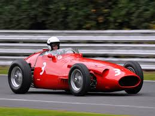
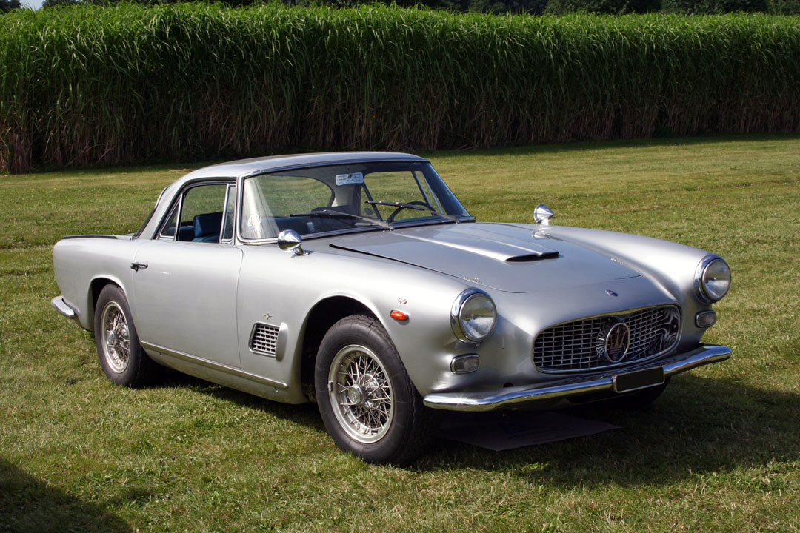
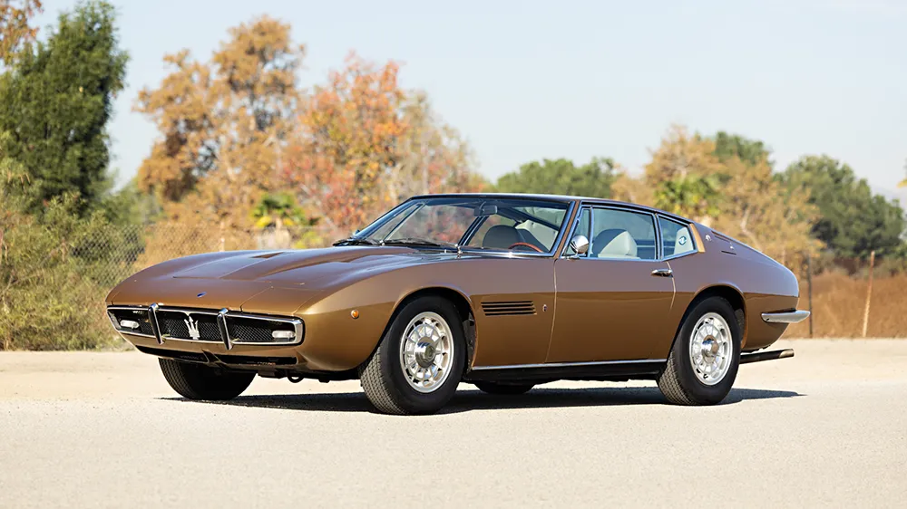
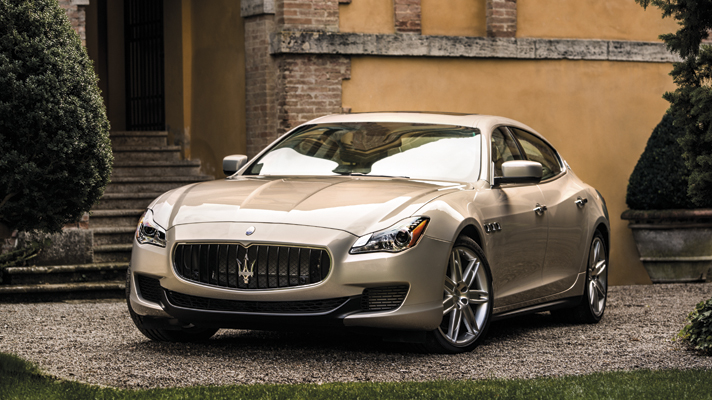
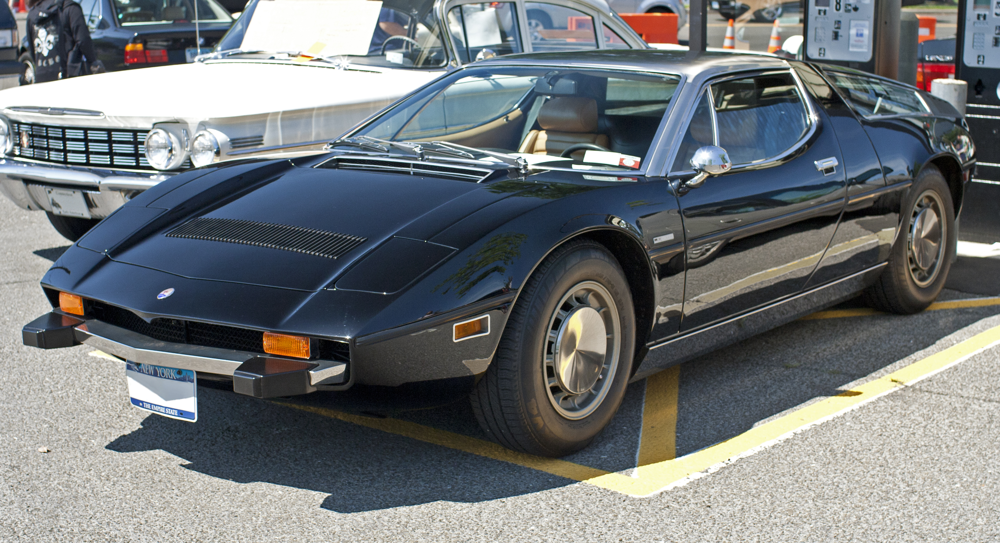
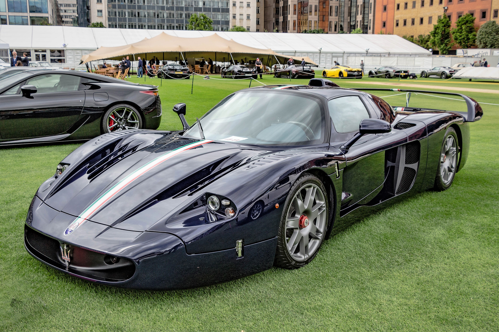
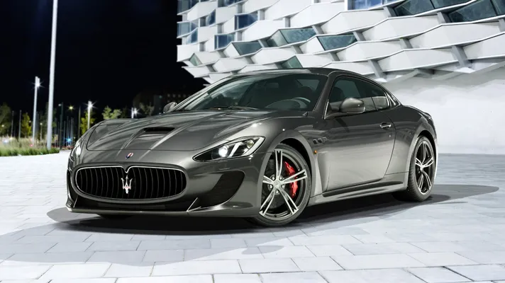
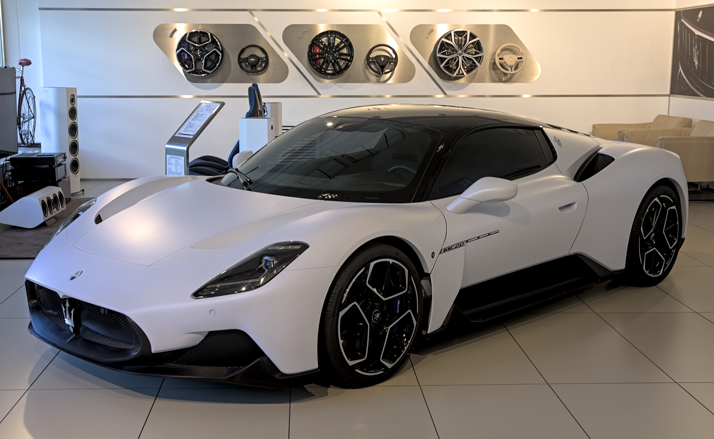
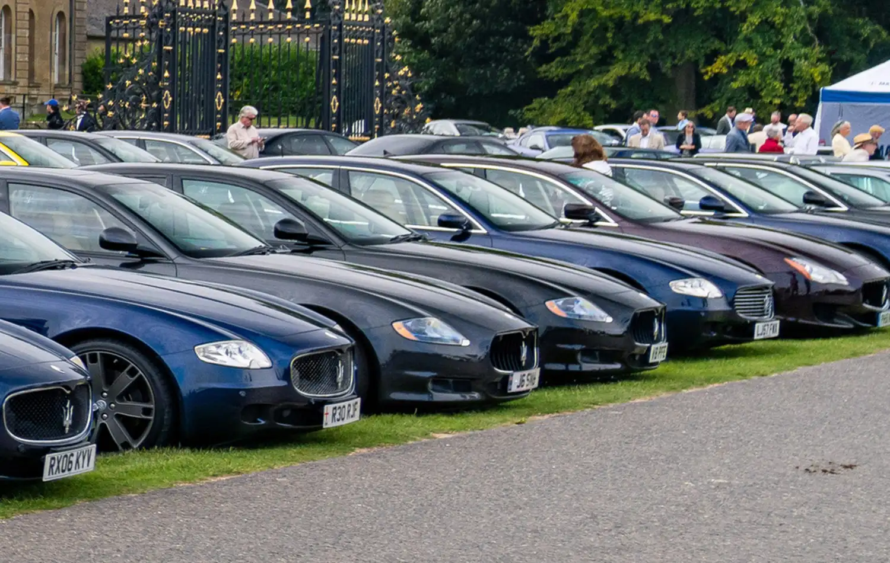
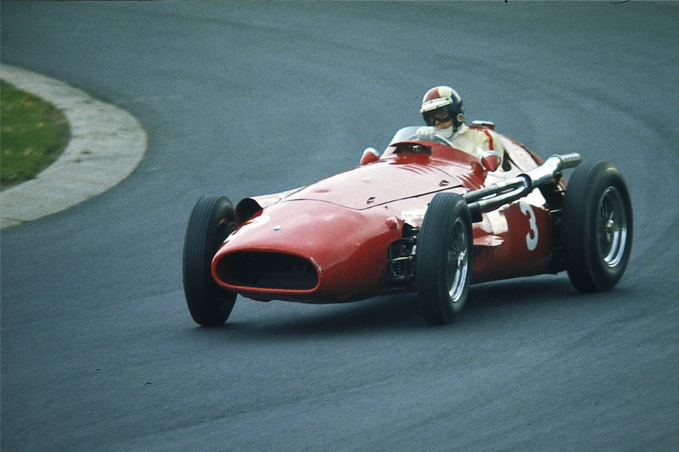

Maserati
The Trident
Founded: 1914
Country: Italy
Icon: Ghibli, Quattroporte
Italian Luxury
The Trident
Maserati is one of the oldest and most storied Italian automotive brands. Founded in Bologna in 1914 by the five Maserati brothers – Alfieri, Bindo, Carlo, Ettore, and Ernesto – the company initially focused on racing.
The brothers were all involved in motorsport. Alfieri was a talented driver and engineer. Their first car, the Tipo 26, debuted in 1926 with Alfieri driving. It won its class at the Targa Florio – an auspicious start.
The trident logo comes from the Fountain of Neptune in Bologna's Piazza Maggiore. It symbolizes strength and vigor – perfect for a racing car.
In the 1930s, Maserati racing cars were competitive in Grand Prix racing, winning races with drivers like Tazio Nuvolari. Financial pressures led the brothers to sell to Adolfo Orsi in 1937, though they remained involved.
After WWII, Maserati moved to Modena and continued racing success. The 250F, driven by Juan Manuel Fangio, won the 1957 Formula 1 World Championship. That same year, a tragic accident at the Mille Miglia led Maserati to withdraw from factory racing.
The 1950s and 1960s saw Maserati focus on road cars. The 3500 GT (1957) was their first successful grand tourer. The 1963 Quattroporte created the luxury performance sedan segment. The 1967 Ghibli, designed by Giorgetto Giugiaro, was a stunning V8 coupe.
Citroën bought Maserati in 1968, leading to the Bora (mid-engine) and Merak. But the 1973 oil crisis hurt sales, and Citroën put Maserati into liquidation. Alejandro de Tomaso rescued the company in 1975.
Under De Tomaso, Maserati produced the Biturbo – a V6 twin-turbo sedan that sold well but had quality issues. The 1990s brought the Ghibli II and Quattroporte IV.
Ferrari acquired Maserati in 1997 and invested heavily. The 2001 Spyder and 2002 Coupe relaunched the brand. The 2004 Quattroporte V was a masterpiece. Under Ferrari, quality and performance soared.
Today, Maserati is part of Stellantis, with a full lineup including the Ghibli, Quattroporte, Levante SUV, and the new MC20 supercar. The brand is transitioning to electrification with the Folgore line.
"We build cars that are works of art."- Alfieri Maserati

1954-1960
One of the most beautiful Formula 1 cars ever. The 250F won the 1957 World Championship with Juan Manuel Fangio, including his legendary win at the Nürburgring.

1957-1964
Maserati's first successful grand tourer. Elegant, fast, and luxurious. Established Maserati as a road car manufacturer.

1967-1973
Giugiaro masterpiece. V8 power, stunning low-slung design, and 170 mph top speed. One of the most beautiful cars of the 1960s.

1963-present
The original luxury sports sedan. Combines four doors with Ferrari-derived performance and Italian style.

1971-1978
Maserati's first mid-engine supercar. V8 power, Giugiaro design, and 170 mph capability.

2004-2005
Ferrari Enzo-based supercar. Built for GT racing, 50 road cars. V12, 630 hp, and stunning performance.

2007-2019
The modern grand tourer. Ferrari V8, beautiful Pininfarina design, and 2+2 seating.

2020-present
The new supercar. Twin-turbo V6 "Nettuno" with F1-derived pre-chamber combustion. 621 hp, 202 mph.
The Quattroporte (Italian for "four-door") created the luxury performance sedan segment. It combined a luxurious interior with genuine sports car performance.
The Quattroporte has always been the choice for those who want luxury and performance in a practical package. It's the ultimate Italian luxury sedan.

Maserati's racing history is among the richest in motorsport. The 250F is one of the most beautiful and successful F1 cars ever.

Under Ferrari (1997-2005) and then Fiat/Stellantis, Maserati has been revitalized.
Maserati's electric future. GranTurismo Folgore has 760 hp, 0-60 in 2.6 seconds. Grecale Folgore and Quattroporte Folgore coming.